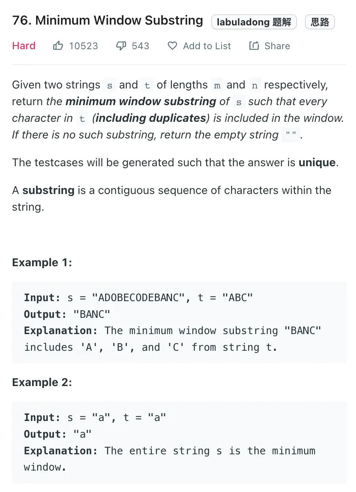
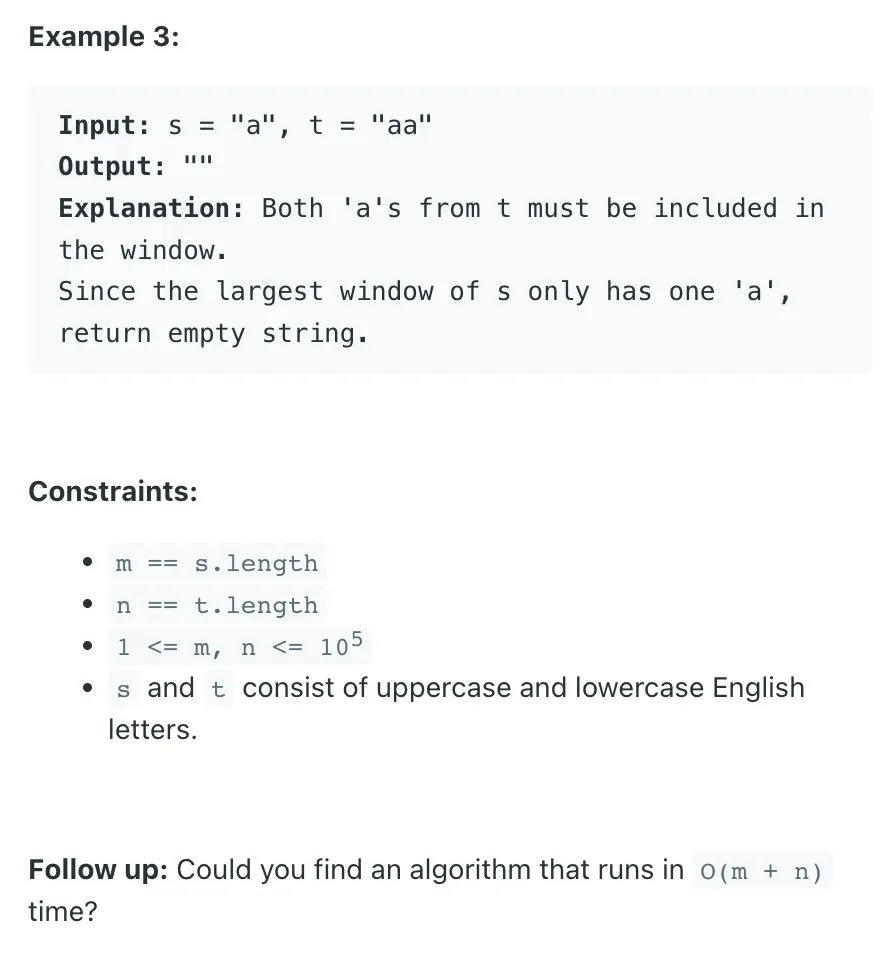

76. Minimum Window Substring
考過的公司：Amazon、Bytedance、tiktok
Question


✍🏽 My Solution
Solution #1 [labuladong滑動窗口模板]
Runtime: 19 ms, faster than 53.65% of Java online submissions for Minimum Window Substring.
Memory Usage: 47.2 MB, less than 34.20% of Java online submissions for Minimum Window Substring.
class Solution {
public String minWindow(String s, String t) {
Map<Character, Integer> window = new HashMap<>(); // 窗口中的字符
Map<Character, Integer> need = new HashMap<>(); // 需要湊齊的字符
for (char c : t.toCharArray()) {
need.put(c, need.getOrDefault(c, 0) + 1);
}
int left = 0, right = 0;
int valid = 0; // 滿足 need 條件的字符個數，如果valid和need大小相同，則說明窗口以滿足條件，完全覆蓋了字符t
int start = 0, minLen = Integer.MAX_VALUE; // 紀錄最小覆蓋字串的起始索引及長度
while (right < s.length()) {
// 將移入窗口的字符
char c = s.charAt(right);
// 增大窗口
right++;
// 窗口內數據的一系列更新
if (need.containsKey(c)) {
window.put(c, window.getOrDefault(c, 0) + 1);
if (window.get(c).equals(need.get(c))) {
valid++;
}
}
// 判斷左側窗口是否要收縮
while (valid == need.size()) {
// 在這裡更新最小覆蓋子串
if (right - left < minLen) {
start = left;
minLen = right - left;
}
// d 是將移出窗口的字符
char d = s.charAt(left);
// 縮小窗口
left++;
// 進行窗口內數據的一系列更新
if (need.containsKey(d)) {
if (window.get(d).equals(need.get(d))) {
valid--;
}
window.put(d, window.get(d) - 1);
}
}
}
return minLen == Integer.MAX_VALUE ? "" : s.substring(start, start + minLen); // 返回最小覆蓋子串
}
}
Explanation (in my words)
- How does their solution work?
- What is the space/time complexity of their solution?
- time: O(n)
- space: O(n)